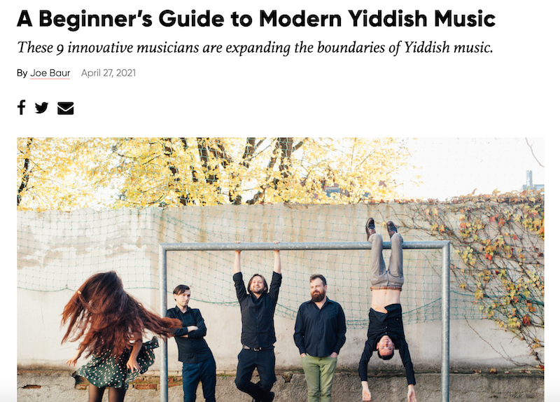

News
We are slowly figuring out how to play shows again as the pandemic changes shape. The good news for non-locals is a lot of our performances are still virtual, so you can access them from afar. The good news for locals is we're kinda doing live shows sometimes now. Follow us on social media or sign up for our mailing list to get the latest.
... And Reviews
We are grateful for the generous things so many lovely people have said about our music!
Cradle Songs, Grave Songs
Our recent album was included in a very sweet summer round-up of Yiddish music by Rokhl Kafrissen, along with new albums by Socalled and Mark Rubin, which you should also check out! Read the review here.
Ari Davidow wrote a very kind review of CS, GS on his website The Klezmer Shack just after the album came out. Read the whole review here.
If you are a beginner and you'd like a guide (to modern Yiddish music), Joe Baur has got you covered. You probably already know about us, but did you know about the 8 other great bands on this list? Now you do! Appropriately festooned with Sasha Lurje's world-renowned headbang.

I remember exactly where I was when I first heard “Hunting Season” off of Brivele’s latest harmonically complex, wildly imaginative, future-building album, Cradle Songs, Grave Songs. Taking poet Aurora Levins Morales’s task of “imagine winning” to heart, this latest collection from Brivele sings the past out of the archive and into the streets to fight, to struggle, to laugh, to mourn.
I could not stop listening to this album once I started. I am belting the words out loud and I know these are songs that will have long lives and many voices singing them into memory. Yiddish and English are beautifully woven together throughout, each winking the other language into new meaning.
As we are called to move beyond the present and breathe life into a new collective future, Brivele takes deep grief and explosive rage and tends to them, allowing them to grow roots. I love each excerpt and echo and thoughtfully chosen melody, and it’s amazing to see the depth of materials Brivele has pulled from in true folk punk fashion. Listening to Cradle Songs, Grave Songs is an experience in remembering and caring for the homes we carry in ourselves and within each other. Shkoyekh, Brivele, shkoyekh!
—Sadie “Zeydi” Gold-Shapiro, Yiddish raconteur, archival tinkerer, and 1/6 of Burikes
With their first album, A Little Letter, Brivele introduced themselves to the world with a bang. Their fresh, brave and often hilarious approach to making new Jewish leftist culture announced them as an important part of What Is Happening With Yiddish Song These Days.
Cradle Songs, Grave Songs is even better, and it reinforces the point that these people are intent on creating a body of work that will stand as an important part of the story of the long line of Jews, going back to the Bund and beyond, who made and make anti-capitalist, anti-patriarchy, anti-white supremacy, anti-Zionist, anti-boring new culture, culture that brings people together and warms them, to make them feel less alone when things are tough.
There is serious Yiddish song scholarship, serious musicianship, and gorgeous, spine-tingling harmonies here. And laughs, and defiance. I love this record.
—Geoff Berner, singer/songwriter/novelist
In the last number of years, some of the most exciting developments in Klezmer and Yiddish music have come from a crew of eclectic and diverse musicians, artists and culture creators in Seattle, Washington. This sub-scene has a distinct flavor, sound, and idea of what this music can and will be. As a product of the 1990s NYC wave of the Klezmer revival, it's very exciting and encouraging to follow such a vibrant cultural development from the opposite coast.
One of my favorite emerging Yiddish music acts from the last few years is Brivele, a trio at the center of this new Seattle Klezmer wave. Shortly before the world shut off I had the pleasure of sharing a concert bill with them in their hometown. And they were really good. The term Power Trio is generally reserved for bands amplified at a much higher decibel level, but I'd argue Brivele is modern Yiddish Power Trio, whose hard-hitting, witty, dark and brutally honest songs hit just as hard, without blowing out the sound system.
I just listened to their upcoming album, Cradle Songs, Grave Songs, straight through from beginning to end. I recommend listening to it in its entirety, for as like their concert sets, Brivele's album is a journey of emotion. Before even reading the liner notes, I could feel that this was a pandemic album. This past year the dark realities of life have at times brought us some of the most emotionally packed music and art, spanning all genres and disciplines. Cradle Songs, Grave Songs, deservingly fits this category.
This is not to say that the record wallows in darkness. Brivele's gift as a band is their ability to go between the dark and the light, the serious and the witty, all with a deep sense of tradition, and abandon of tradition. In that way, they are the quintessential Klezmer Band (even if they would never describe themselves as such). Their group sound is undeniably unique, and their musical and lyrical story-telling is captivating.
This album will get regular spins on the boom-box. I'm excited for you all to hear it yourselves. And I'm particularly looking forward to hearing Brivele perform the songs from Cradle Songs, Grave Songs live in concert as soon as possible.
—Michael Winograd, Brooklyn, 4/29/21
I am so grateful to Brivele for creating this sonic storehouse of treasure. Each song is a well crafted journey. Each track, a souvenir I can touch to remember how Jewish ancestors and other kin have employed technologies of (Jewish) memory; such as sassy harmony to build power, irony to develop self critique, and beauty to hold hardship. There is so much expansive thought and acoustic creativity in this skhoyre, I will return to it endlessly for inspiration.
—Jenny Romaine
A Little Letter
To me, this is what klezmer, or folk music, or ok, all music should be. It's aware and serious about the tradition in which it's working. But it understands that music is above all for making people feel something, dammit. There's beauty in the sadness, and there's good laughs in the funny bits. It's reassuring and inspiring to hear a song like Vi Azoy Shloft Der Keyser and realize how witty and subversive these old time people were. The Yiddish in the Yiddish songs is pronounced and sung beautifully, too. A Little Letter is the kind of record I aspire to make.
I also want to say how much I enjoyed the invented parts of the album, like the commentary on Amazon and the housing crisis in the Hungry Yid song. Brivele don't just ride the tradition or recreate it, they do their part to add clever relevance, to keep the tradition truly living and growing.
—Geoff Berner, Vancouver klezmer punk gives-no-fucks accordion player & novelist
Brivele's new EP brings Yiddish song and sensibility into the world of punk-folk like it was always meant to be with tight vocal harmonies, creative arrangements, and hard hitting political clarity!
—Dan Blacksberg of the Radiant Others podcast